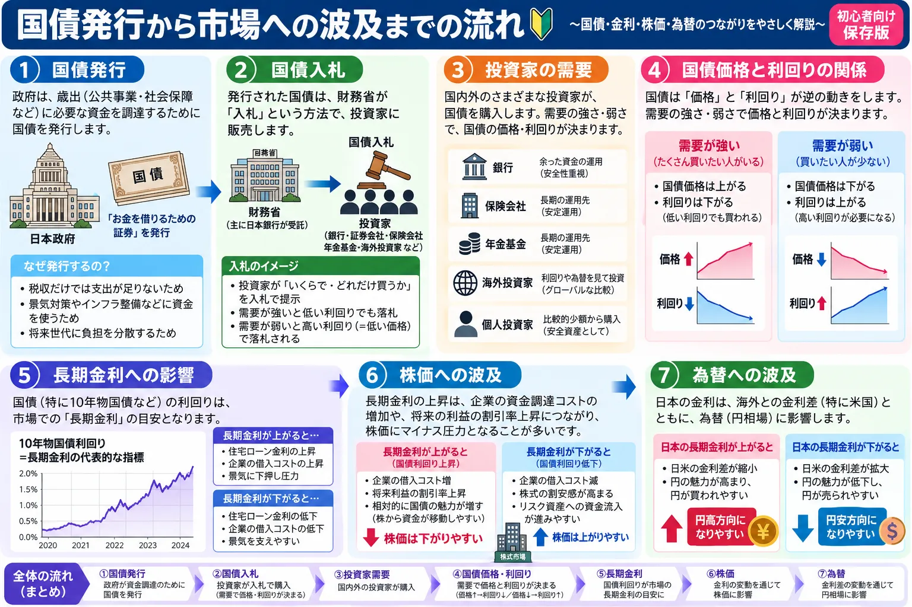

話題・トレンド
国債入札とは？入札が低調だとなぜ長期金利が上がるの？初心者向けに解説
金融ニュースでは「米国債入札が低調」「入札後に長期金利が上昇」といった表現が登場します。 国債入札は政府が資金を調達するための重要な仕組みで、その結果は国債への需要を確認する材料の一つです。 ただし、応札倍率など一つの数字だけで入札の強弱や相場の方向を判断することはできません。 本記事では、国債入札の基本から長期金利・株価・為替への波及まで初心者向けに整理します。
Overview
国債入札から長期金利までの流れを最初に整理

政府が国債を発行
国債入札
投資家が「どの利回りなら買うか」を示す
需要が想定より弱い場合、より高い利回りが必要になることがある
国債価格への下押し圧力・国債利回り上昇
長期金利を通じて株価・為替などへ波及する場合がある
重要： これは基本的な流れを示したものです。「低調な入札＝必ず長期金利上昇」ではありません。 景気指標、インフレ、FRBの金融政策、市場ポジションなどが同時に影響する場合があります。
Definition
国債入札とは？
国債入札とは、政府が発行する国債を市場参加者へ販売するために行う入札です。 米国の場合、米国債を発行しているのは米財務省（U.S. Department of the Treasury）です。 FRB（米連邦準備制度理事会）が国債を発行しているわけではありません。
発行者
米財務省
米政府の資金調達や満期を迎える国債の借り換えなどのため、市場性国債を発行します。
金融政策
FRB
FRBは中央銀行として政策金利などの金融政策を担当します。米財務省とは役割が異なります。
国債そのものの仕組みについては 「国債とは？国債売りで金利が上がる仕組み」 もあわせて確認すると理解しやすくなります。
Government Financing
なぜ政府は国債を発行するの？
政府には社会保障、行政、防衛、公共事業などさまざまな支出があります。 税収などの歳入だけでは必要な支出を賄えない場合、国債を発行して資金を調達します。
また、すでに発行されている国債が満期を迎える際、新しい国債を発行して借り換えることもあります。 米財務省は市場性国債を、政府運営に必要な資金の調達や満期債務の返済などに利用しています。
国債発行の是非や財政政策の評価とは分けて考えることが大切です。 本記事では「国債が市場へどのように供給され、価格や利回りにどう関係するか」に焦点を当てます。
Treasury Securities
米国債にはどんな種類がある？
米国債は満期までの期間などによって複数の種類があります。 金融ニュースでは特に2年債、5年債、10年債、30年債などの入札がよく注目されます。
| 種類 | 概要 | 代表的な年限 |
|---|---|---|
| Treasury Bills | 満期1年以下の短期国債 | 数週間～1年程度 |
| Treasury Notes | 1年超10年以下の国債 | 2年・3年・5年・7年・10年 |
| Treasury Bonds | 10年を超える長期国債 | 20年・30年 |
※ スマートフォンでは横にスクロールできます。
このほか、物価に連動するTIPS（物価連動国債）や変動利付債（FRN）もあります。 今回は細かな商品性よりも、異なる年限の国債が定期的に入札されていることを押さえておけば十分です。
Participants
国債入札には誰が参加するの？
米国債入札には個人から大規模な金融機関まで幅広い参加者が存在します。 TreasuryDirectの公式資料では、銀行、証券会社、投資ファンド、保険会社、海外・国際機関などさまざまな主体が直接入札できるとされています。
- 銀行
- 証券会社
- 機関投資家
- 投資ファンド
- 保険会社
- 海外投資家
- 個人投資家
- Primary Dealers
Primary Dealers（プライマリーディーラー）はニューヨーク連銀の取引相手となる金融機関で、 米国債入札にも継続的に参加することが求められています。 ただし、国債の発行主体はあくまで米財務省です。
Supply & Demand
国債の需要が強い・弱いとはどういうこと？
需要が強い
買いたい投資家が多い
国債を保有したい投資家が多ければ、比較的低い利回りでも買い手が集まりやすくなります。
需要が弱い
より高い利回りが必要になる場合がある
買い手が少ない場合、投資家に国債を保有してもらうため、より高い利回りが必要になることがあります。
国債価格が下がる → 利回りは上がる
債券市場全体の仕組みについては 「債券市場とは？」 も参考になります。
Auction Strength
「国債入札が低調」とは？
金融ニュースでは「低調な入札」「弱い入札」と表現されることがあります。 これは通常、一つの数字だけではなく、複数の結果を過去の入札や市場予想と比較して評価した表現です。
応札倍率
発行額に対してどれだけの入札が集まったかを確認します。
落札利回り
どの程度の利回りで入札が成立したかを確認します。
入札前の市場水準との差
市場が事前に想定していた利回りとの差も重要です。
投資家別の落札状況
Direct・Indirect・Primary Dealersなど、誰がどの程度引き受けたかを確認します。
「応札倍率が○倍以下なら必ず低調」といった絶対的な基準があるわけではありません。 同じ年限の過去の入札や、その時点の市場環境と比較する必要があります。
Bid-to-Cover Ratio
応札倍率（Bid-to-Cover Ratio）とは？
応札倍率は、国債入札でどれくらいの注文が集まったかを見る代表的な指標です。 基本的には「応札総額 ÷ 発行・落札額」という考え方で確認します。
この架空例では、100の発行額に対して250の応札が集まったことになります。 一般に応札倍率が高ければ多くの注文が集まったことを示しますが、数字だけで需要の質まで判断することはできません。
応札倍率が高い＝必ず好調、低い＝必ず低調ではありません。 過去の同年限の入札結果、落札利回り、市場予想との差、投資家別の落札状況などと合わせて見ることが重要です。
Auction Yield
落札利回りとは？
米国債のNotesやBondsなどの競争入札では、投資家が受け入れられる利回りを提示します。 米財務省は低い利回りの競争入札から順番に受け入れ、発行予定額に達するまで落札していきます。
現在の米国債入札は「単一価格方式（single-price auction）」で、 落札した競争入札者と非競争入札者は、受け入れられた競争入札の最高利回りなどに対応する同じ価格で証券を取得します。
落札利回りが高いから「良い入札」、低いから「悪い入札」という意味ではありません。 高い利回りは投資家にとって受け取れる収益率が高い一方、発行者にとっては資金調達コストに関係します。 市場では事前予想との差が特に注目されます。
Tail
「テール」とは？
米国債入札のニュースでは「入札がテールした」という表現が使われることがあります。 これは、入札直前の市場で想定されていた利回りよりも、実際の入札で決まった最高落札利回りが高くなった場合に使われる市場用語です。
入札直前の市場が想定する利回り
実際の最高落札利回りがそれより高い
市場の想定より高い利回りが必要だった
需要の弱さを示す材料として受け止められる場合がある
反対に、実際の落札利回りが入札直前の市場水準を下回る場合は「stop-through」と表現されることがあります。 ただし、市場の変動が大きい場面では直前の比較水準自体も動くため、テールだけで入札全体を評価するのは適切ではありません。
Bidder Categories
間接入札者（Indirect Bidders）とは？
| 区分 | 概要 | ニュースでの見方 |
|---|---|---|
| Primary Dealers | ニューヨーク連銀の取引相手となる金融機関。米国債入札への継続的な参加も求められる | ディーラーの引受比率が注目される場合がある |
| Direct Bidders | 仲介者を通さず、自らの勘定で直接競争入札を行う非プライマリーディーラーなど | 国内機関投資家などの直接需要を見る参考になる場合がある |
| Indirect Bidders | 直接入札者を通じて競争入札する顧客。外国・国際通貨当局なども含まれる | 海外を含む幅広い投資家需要の参考として注目されることがある |
※ スマートフォンでは横にスクロールできます。
Indirect Bidders＝外国政府だけ、海外投資家だけ、という意味ではありません。 米財務省の公式資料では、直接入札者を通じて競争入札する顧客を含む区分であり、 外国・国際通貨当局による入札もこの区分に含まれます。
Yield Impact
入札が低調だとなぜ長期金利が上がるの？
国債入札が市場予想より弱いと判断された場合、「現在の利回りでは国債を十分に保有したい投資家が少ないのではないか」と意識されることがあります。
国債入札
投資家の需要が想定より弱い
国債を保有してもらうため、より高い利回りが求められる
国債価格への下押し圧力
国債利回り上昇
さらに、例えば10年債や30年債の入札で需要への懸念が強まれば、その年限だけでなく他の国債にも売りが波及し、 長期ゾーン全体の利回りが上昇する場合があります。
ただし、低調な入札＝必ず長期金利上昇ではありません。 同じ時間帯にインフレ指標、雇用統計、FRB関係者の発言、原油価格、ポジション調整など別の材料が出ている可能性があります。
Monetary vs Fiscal
政策金利と国債入札は何が違う？
政策金利
中央銀行の金融政策
米国ではFRBが金融政策を担当し、FOMCで政策金利の誘導目標などを決定します。
国債入札
政府の国債発行
米財務省が国債を市場へ供給し、投資家から資金を調達する仕組みです。
米財務省 ＝ 米国債の発行
FRBが米10年国債利回りを直接「○％にする」と決めているわけではありません。 政策金利については「政策金利とは？」、 FOMCについては「FOMCとは？」で詳しく解説しています。
Long-Term Rates
なぜFRBが何もしていなくても長期金利は動くの？
長期金利は現在の政策金利だけで決まるものではありません。 市場参加者は数年先までの経済や金利、インフレ、国債需給などを考えながら国債を売買しています。
- 将来の政策金利予想
- インフレ期待
- 景気見通し
- 国債発行量
- 国債の需給
- タームプレミアム
- 投資家のリスク選好
そのためFOMCが開催されていない日でも、国債入札や経済指標などをきっかけに長期金利が動くことがあります。 物価を見る代表的な指標としては「PPIとは？」、 景気・雇用を見る材料としては「米国雇用統計とは？」も参考になります。
Treasury Supply
国債発行が増えると金利は必ず上がる？
国債の発行量が増えると市場へ供給される国債が増えるため、他の条件が同じなら需給面で利回り上昇圧力になる可能性があります。 しかし、実際の市場はそれほど単純ではありません。
投資家需要
供給が増えても、それ以上に買いたい投資家が増えれば価格が大きく下がらない場合があります。
景気・インフレ
景気悪化やインフレ鈍化が意識されれば、安全資産として国債需要が高まる場合があります。
金融政策
将来の利下げ・利上げ予想も国債利回りへ影響します。
安全資産需要
市場不安が高まると米国債などへ資金が向かうことがあります。
海外需要
海外の中央銀行や金融機関、投資家の需要も国債市場に影響します。
市場流動性
取引のしやすさや市場参加者のポジションも価格形成へ影響します。
Yield Curve
国債入札とイールドカーブの関係
イールドカーブは、満期までの期間が異なる国債の利回りを並べた曲線です。 例えば10年債や30年債の入札をきっかけに長期ゾーンの利回りが大きく動けば、 2年債など短い年限との金利差も変化し、イールドカーブの形が変わる場合があります。
ただし、イールドカーブは国債入札だけで決まりません。 将来の政策金利予想、景気、インフレ、タームプレミアムなど複数の要因が影響します。
Stocks
国債入札と株価の関係
国債入札が市場予想より低調
長期金利が上昇
企業の資金調達コスト上昇への警戒
株式のバリュエーションにも影響
株価の重荷になる場合がある
金利が上昇すると企業の借入コストが高くなる可能性があります。 また、将来の利益を現在価値へ割り引いて考える際の割引率も高くなるため、 将来利益への期待が大きい成長株などで金利変化が意識されることがあります。
ただし「国債入札低調＝株安」ではありません。 株価は企業業績、景気、為替、投資家心理などでも動きます。 株価形成の基本は「株価はなぜ上下するのか？」でも解説しています。
Foreign Exchange
国債入札とドル円・為替の関係
米国債入札後に米国の国債利回りが大きく動くと、為替市場も反応する場合があります。 例えば米金利が上昇すれば、日米金利差への見方などを通じてドル円が動くことがあります。
ただし、為替は日本の金融政策、米国の金融政策、景気、インフレ、地政学リスク、 投資家のリスク選好、ポジション調整など多くの要因で動きます。 「米国債入札が弱かったから必ずドル高」といった単純な見方はできません。
News Checklist
国債入札のニュースを見るときは何を確認する？
入札結果を一つの数字だけで判断せず、次の順番で確認するとニュースを整理しやすくなります。
-
どの国の国債か
米国債、日本国債など発行国を確認します。
-
何年債の入札か
2年、5年、10年、30年など年限を確認します。
-
発行・入札規模はいくらか
市場が吸収する必要のある国債の規模を確認します。
-
応札倍率はどうだったか
どの程度の注文が集まったかを確認します。
-
過去の同年限と比べてどうか
単独の数字ではなく過去の同種入札と比較します。
-
落札利回りはどうだったか
実際にどの利回りで入札が成立したかを確認します。
-
入札前の市場水準との差はどうか
テールなど、市場予想との差を確認します。
-
投資家別の落札状況はどうか
Indirect、Direct、Primary Dealersなどの比率を確認します。
-
入札後の国債利回りはどう動いたか
実際の市場反応を確認します。
-
同時に別の材料がなかったか
経済指標、FRB、原油、株式市場など他の材料も確認します。
ポイントは「一つの数字だけで良い入札・悪い入札と決めない」ことです。 市場が何を予想していたか、過去と比べてどうだったか、実際に金利がどう反応したかまで確認しましょう。
Recent Example
直近の米国債入札の例｜2026年9月23日の5年債入札
国債入札ニュースの読み方を具体的にイメージするため、記事公開時点で確認できる直近の5年国債入札を例にします。
| 項目 | 結果 |
|---|---|
| 入札日 | 2026年9月23日 |
| 年限 | 5年債（Treasury Note） |
| 募集額 | 700億ドル |
| 最高落札利回り | 5.033％ |
| 応札倍率 | 2.21倍 |
| Indirect Bidders | 競争入札落札額の約54.3％ |
| Direct Bidders | 競争入札落札額の約29.9％ |
| Primary Dealers | 競争入札落札額の約15.8％ |
※ スマートフォンでは横にスクロールできます。
この入札では応札倍率が2.21倍となり、直前の市場で取引されていた利回りより高い水準で入札が決着しました。 また、Indirect Biddersの落札比率も確認材料となり、市場では需要が強くなかったことを示す複数の要素が意識されました。
ただし、この日の国債利回りの動きを入札だけで説明することはできません。 金利は金融政策見通し、インフレ、原油価格、景気指標、市場ポジションなど多数の材料によって変動します。 入札結果はその中の一つとして見ることが重要です。
Related Articles
国債入札と一緒に確認したい基礎知識
国債入札のニュースを理解するには、国債・債券市場・政策金利・経済指標の基礎を一緒に確認すると理解しやすくなります。
FAQ
国債入札に関するよくある質問
-
国債入札とは何ですか？
政府が発行する国債を投資家へ販売するために行う入札です。米国では米財務省がTreasury Bills、Notes、Bondsなどの市場性国債を公募入札で発行しています。 -
国債は誰が発行しているのですか？
国債は政府が発行します。米国債の場合は米財務省が発行します。中央銀行であるFRBが国債を発行しているわけではありません。 -
国債入札には誰が参加しますか？
銀行、証券会社、機関投資家、投資ファンド、保険会社、海外・国際機関、個人など幅広い参加者が存在します。米国債ではPrimary Dealersも重要な参加者です。 -
応札倍率とは何ですか？
入札に集まった応札額を発行・落札額で割った比率です。例えば発行額100に対して250の応札があれば、応札倍率は2.5倍となります。国債需要を見る代表的な材料の一つです。 -
応札倍率が高ければ良い入札ですか？
必ずしもそうとは限りません。過去の同年限の入札結果、落札利回り、入札前の市場水準との差、Indirect Biddersなどの落札状況と合わせて確認する必要があります。 -
国債入札の「テール」とは何ですか？
入札直前の市場で想定されていた利回りより、実際の最高落札利回りが高くなる差を「テール」と表現することがあります。市場が想定したより高い利回りが必要だったため、需要の弱さを示す材料として受け止められる場合があります。 -
国債入札が低調だとなぜ金利が上がるのですか？
国債への需要が想定より弱い場合、投資家に国債を保有してもらうため、より高い利回りが必要になることがあります。国債価格と利回りは基本的に逆方向に動くため、価格への下押し圧力が利回り上昇につながる場合があります。ただし必ず上昇するわけではありません。 -
FRBが国債を発行しているのですか？
いいえ。米国債を発行するのは米財務省です。FRBは中央銀行として金融政策を担当します。FRBと米財務省は役割が異なります。 -
国債入札が低調だと株価は下がりますか？
必ず下がるわけではありません。入札を受けて長期金利が上昇すれば株価の重荷になる場合がありますが、株価は企業業績、景気、インフレ、金融政策、為替、投資家心理など多くの要因で動きます。
Summary
まとめ｜国債入札は長期金利を理解する重要な材料の一つ
- 国債入札は政府が国債を市場へ発行するための仕組みです。
- 米国債を発行するのはFRBではなく米財務省です。
- 入札結果から国債への需要を確認できます。
- 応札倍率は需要を見る代表的な材料の一つです。
- 落札利回り、テール、投資家別の落札状況なども確認されます。
- 国債への需要が弱い場合、より高い利回りが必要になることがあります。
- 国債価格と利回りは基本的に逆方向に動きます。
- 国債需給は長期金利を動かす要因の一つです。
- 長期金利は金融政策だけで決まるものではありません。
- 入札結果だけで株価や為替の方向を断定することはできません。
Next Step
国債価格と金利の基本から確認する
国債入札ニュースを理解するうえで最も重要なのは「国債価格が下がると利回りが上がる」という基本関係です。 国債と債券市場の仕組みを先に理解しておくと、入札結果や長期金利のニュースが読みやすくなります。
ご利用にあたっての注意事項
本記事は一般的な情報提供と金融教育を目的としており、特定の国債、株式、ETF、投資信託、通貨、金融商品などの売買を推奨・勧誘するものではありません。 国債価格、金利、株価、為替などは、金融政策、経済指標、需給、財政状況、地政学リスク、市場心理など多くの要因により変動します。 また、入札結果と市場価格の因果関係を一つの要因だけで判断することはできません。 実際の投資判断を行う際は最新の公式情報や各金融商品の説明資料を確認し、ご自身の判断と責任で行ってください。